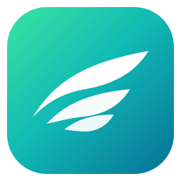

+
—
□
×
‹
›
↻
●
😍
SIDE
◈
✦
⋮
Browse without limits.
Naviguez plus loin. Sans perdre le contrôle.
→
Rechercher
Comparer
Planifier
Apprendre
Créer
Quantic Shield
Protection réseau légère, permissions strictes.
Actif
Quantic Vault
Coffre local chiffré, chargé uniquement à la demande.
Local · bêta
Quantic Proof
SHA-256 local et preuves de build vérifiables.
Vérifiable
Transparency
Ce que Glide protège, conserve et expose.
Lisible
Quantic Mail
Messagerie Quantic chiffrée, pensée pour fonctionner hors des géants du mail.
Réseau Quantic
Providence
Analyse séparée du cœur de navigation.
À la demande
Quantic
×